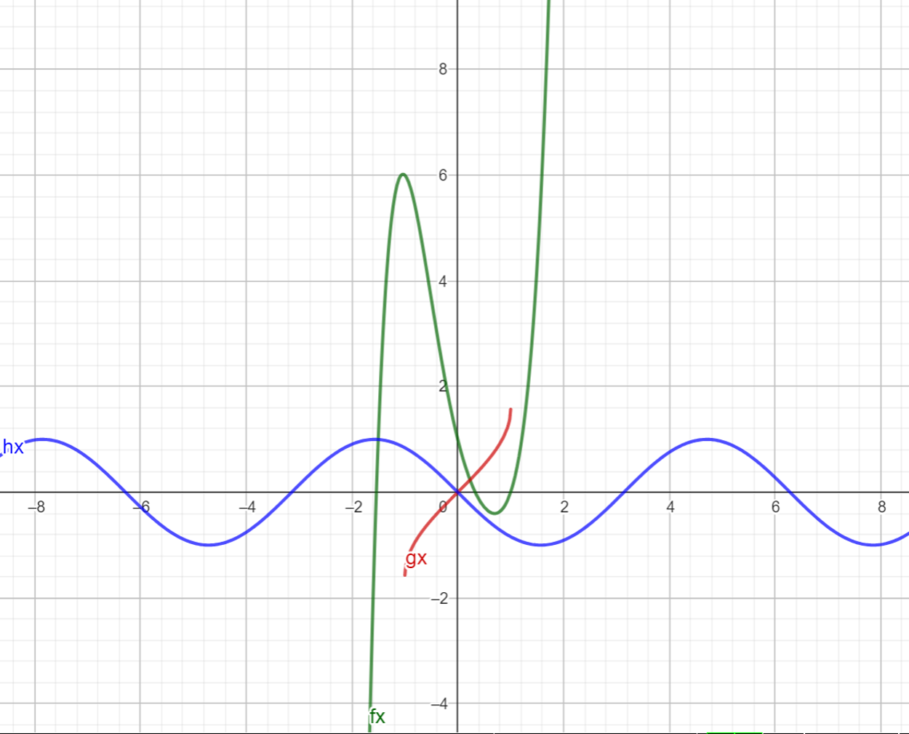

Matematikai analízis I.
Ez a kurzus a matematikai analízist tartalmazza.
Tárgy tartalma:
Halmazok, műveletek halmazokkal. Relációk, függvények. Valós számok és tulajdonságaik. A valós számok topológiája.
Számosság. Számsorozatok, montonitás, korlátosság, részsorozat. Kon vergens sorozatok, műveletek konvergens
sorozatokkal, rendezés. Cauchy-féle konvergencia krité rium. Nevezetes sorozatok. Sorok. Konvergencia kritériumok
sorokra. Függvények folytonossága, műveletek folytonos függvényekkel. Függvények határértéke, műveletek határértékekkel,
egyenlőt lenségek. Határérték és folytonosság kapcsolata. Monoton függvények. Racionális egész és racio nális
törtfüggvények ábrázolása. Függvénysorozatok és függvénysorok. Cauchy-Hadamard tétel. Elemi függvények.
Differenciálszámítás és alkalmazásai. Paraméteresen és polárkoordinátásan
adott görbék.